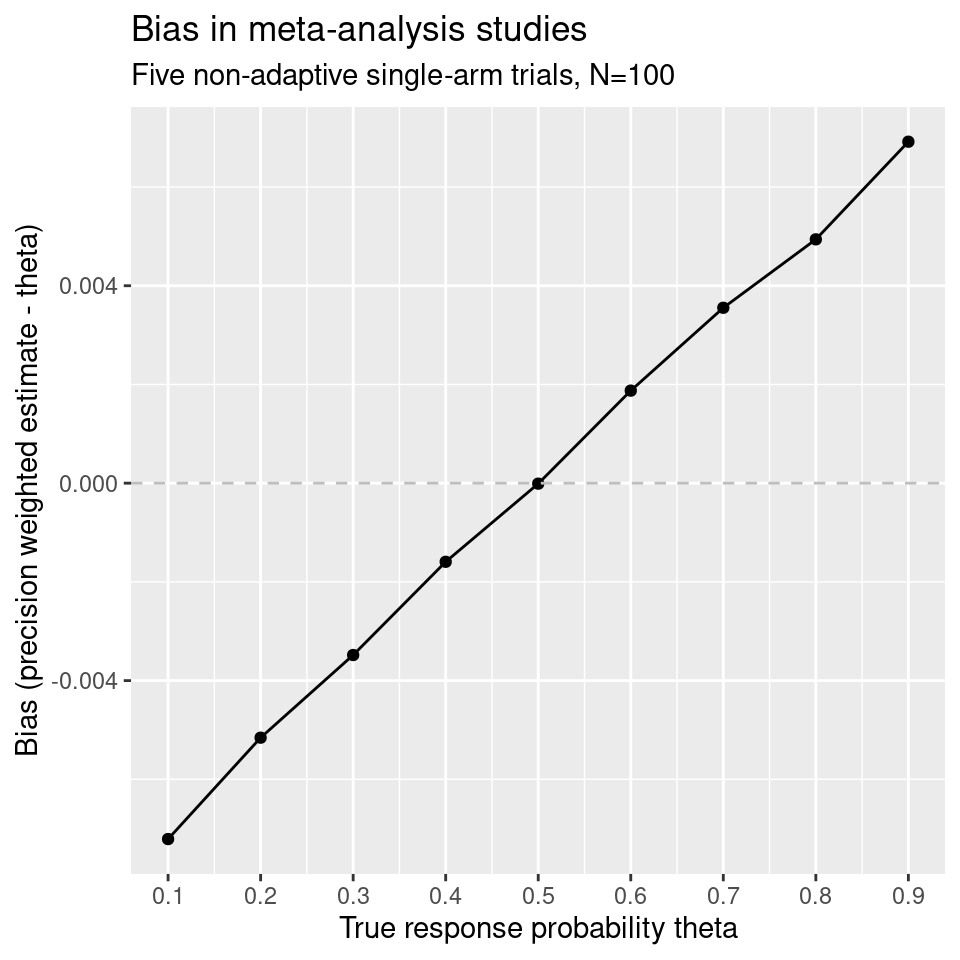

Meta-analysis: general
MA_general.RmdMeta-analysis with no adaptive designs
Consider a meta-analysis comprised of n.studies binary outcome trials, all with sample size N. Examine a range of true response probabilities theta:
# Simulate the trials:
nsims <- 10000
theta.MA <- seq(0.1, 0.9, 0.1)
pwbias <- rep(NA, length(theta.MA))
mean.se <- rep(NA, length(theta.MA))
for(i in 1:length(theta.MA)){
MA.results <- pwb::simMeta(N=100, theta=theta.MA[i], n.studies=5, nsims=nsims)
wtdmeans <- rep(NA, nsims)
ses <- rep(NA, nsims)
for(j in 1:nsims){
var.studies <- MA.results$se[j, ]^2
wi <- 1/var.studies
wtdmeans[j] <- weighted.mean(x=MA.results$theta.hat[j, ], w=wi)
var.ma <- 1/sum(wi)
ses[j] <- sqrt(var.ma)
}
pwbias[i] <- mean(wtdmeans-theta.MA[i])
mean.se[i] <- mean(ses)
}
bias.df <- data.frame(bias=pwbias,
se=mean.se,
lower=pwbias-1.95*mean.se,
upper=pwbias+1.95*mean.se,
theta=theta.MA)
ggplot(data=bias.df, mapping=aes(x=theta, y=bias))+
geom_line()+
geom_point()+
# geom_ribbon(aes(x=theta, ymin=lower, ymax=upper), fill="red", alpha=0.1)+
labs(x="True response probability theta",
y="Bias (precision weighted estimate - theta)",
title="Bias in meta-analysis studies",
subtitle="Five non-adaptive single-arm trials, N=100")+
geom_hline(aes(yintercept=0), col="grey", linetype="dashed")+
# ylim(max(abs(c(bias.df$lower, bias.df$upper))) * c(-1, 1) )+
scale_x_continuous(breaks=theta.MA)